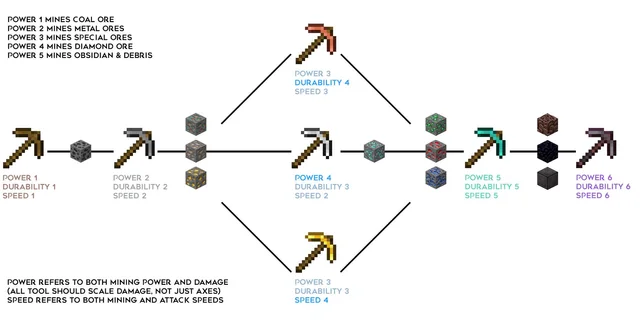
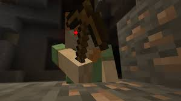
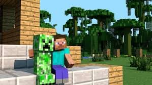
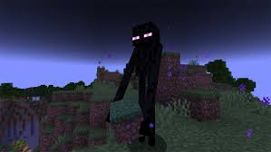
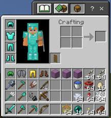
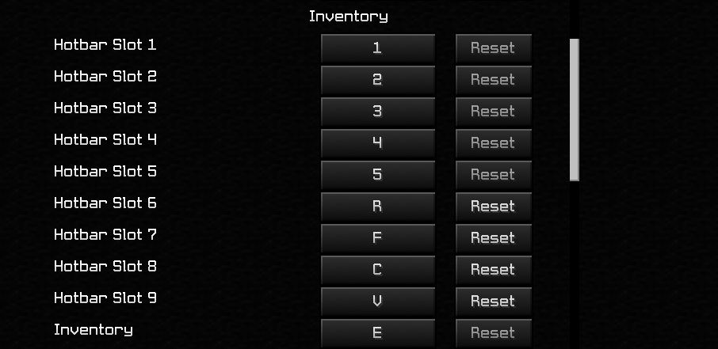
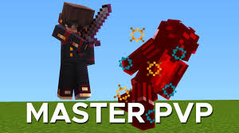

THE MINECRAFT GUIDE
---------------------------------------------------------------- An Introduction To Minecraft ----------------------------------------------------------------
About Minecraft
Minecraft started off a just a 3D sandbox game in 2011. Now, Minecraft has evolved into a 3D PvP/sandbox/survival/PvE game. Yea thats alot of slashes. Anyways, Minecraft has around 6 types of tools and armor. The types for the weapons include:
- Wood
- Stone
- Iron
- Gold
- Diamond
- Netherite
.
The types for the the armor include:
- Leather
- Chainmail
- Iron
- Gold
- Diamond
- Netherite
Minecrafts armor and tools can be tricky for newer players, for example, while all other pickaxes can break the ore or meteral need to make them, the gold pickaxe can't, for some reason... So to help you out here is a chart for the pickaxe progression :) :

First Things First!
| What To Do |
What Not To Do |
Images |
| Find Structures |
Try to build a mansion this early |
 |
| Work your way up to atleast iron tools (wood, stone, then iron) |
Skip any of the progression of items (Like breaking iron with a wooden pick) |
 |
| Take your time killing mobs. |
Give a creeper a hug... |
 |
| Look at a enderman (He will give op gear but is very rare to find) |
Kill enderman (You will not get any of the op loot that he gives) |
 |
More Tips :) !
- Remember to organize your inventory in a way that allows you to know which item is in each hotbar slot.

- Use hotkeys to quickly switch between slots instead of using your scroll wheel.

- Jumping and attacking as you fall down, will preform a crit attack which does increased damage.

|
The Kinds Of Minecraft Players
- The PvPer is a kind of minecraft player who lives off of murder. He kills other players for fun and then takes their stuff to use to kill more players.
- The Builder is a kind of minecraft player who can build amazing structures all by themselves. This player just wants to have a blast playing and chillin.
- The Redstoner is similar to the builder but specilzes in the use of redstone to make complicated things that you would not even think where possible in Minecraft.
- The Trapper can be almost any kind of minecraft player because they usully use their other personality to lure people to their death.
- There are also many other kinds of ways to play minecraft and you have to find your own playstyle.
Sources:
Minecraft Wiki,
Official Minecraft Site